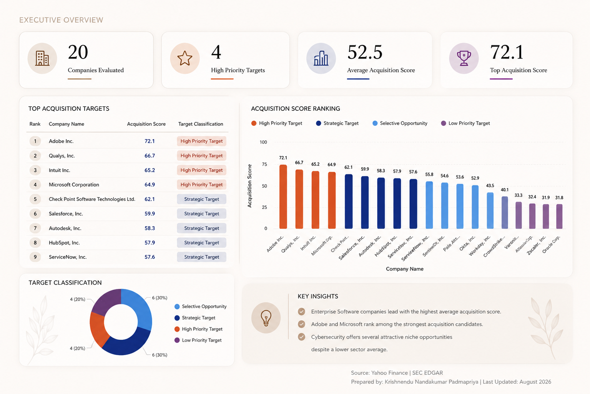

01
Growth vs. Valuation
Compares company growth and valuation alongside acquisition scores and target classification.
An acquisition-screening analytics platform that combines financial performance, valuation, growth, and sector context to rank and prioritize potential technology targets.

Screening potential acquisition targets requires comparing companies across valuation, growth, profitability, financial strength, cash generation, and shareholder returns.
Looking at these measures independently can produce conflicting signals. A fast-growing company may appear attractive on growth alone while carrying a higher valuation or weaker financial profile.
The challenge is to bring these factors into a consistent screening framework that makes companies easier to compare, rank, and prioritize before deeper acquisition due diligence begins.
Which companies represent the strongest acquisition candidates when valuation, growth, profitability, financial strength, cash generation, and shareholder returns are evaluated together?
The analysis is designed for an early-stage acquisition screening process, where a larger set of companies needs to be narrowed before deeper strategic and financial diligence begins.
Compare potential targets using a consistent financial framework and identify companies that warrant further investigation.
Prioritize a shortlist for deeper valuation, strategic-fit, operational, and due-diligence review.
Market and financial data moves through a structured analytical workflow from collection to acquisition-screening reporting.
Market and financial statement data is collected for the selected technology companies through yfinance.
Records are cleaned, missing values are handled, and the financial metrics required for comparison are calculated.
Companies are scored relative to peers across valuation, growth, profitability, leverage, cash generation, and returns.
Company attributes and analytical results are stored in the dimensional SQLite warehouse for SQL analysis.
Ranked targets and financial results are exported to Power BI for screening and executive reporting.
The detailed analysis moves beyond the executive ranking to examine acquisition attractiveness through growth, valuation, financial performance, and sector context.
Compares company growth and valuation alongside acquisition scores and target classification.
Evaluates profitability, leverage, cash generation, and shareholder returns across potential targets.
Compares acquisition attractiveness across Enterprise Software and Cybersecurity while highlighting company-level differences.
Adobe (72.1), Qualys (66.7), Intuit (65.2), and Microsoft (64.9) achieved the highest acquisition scores and were identified as the strongest acquisition candidates.
Enterprise Software recorded a higher average acquisition score than Cybersecurity (57.7 vs. 47.3), indicating stronger overall acquisition potential within the selected company universe.
High revenue growth did not necessarily result in higher acquisition scores. Companies such as CrowdStrike and SentinelOne demonstrated strong growth but ranked lower after valuation and financial strength were considered.
Several Cybersecurity companies, including Qualys and Check Point, outperformed the sector average, showing that individual company performance can differ significantly from broader sector trends.
Debt-to-Equity ratios ranged from 0.01 to over 3.00 across the company universe, making leverage an important factor in the acquisition scoring model.
The combined scoring framework provides a consistent way to narrow the company universe before deeper strategic and financial review.
Extend the screening framework to additional technology sectors and industries to broaden the set of potential acquisition targets.
Add factors such as management quality, strategic fit, and market sentiment to complement the existing quantitative scoring model.
Automate data collection and dashboard refreshes to keep the screening analysis current with less manual intervention.
This project is designed as an early-stage acquisition screening framework rather than a substitute for full strategic and financial due diligence. The following boundaries should be considered when interpreting the rankings.
Acquisition scores are intended to prioritize companies for further review, not determine transaction value or recommend an acquisition.
The model focuses on financial and market metrics and does not incorporate management quality, strategic fit, integration risk, or other qualitative considerations.
The analysis covers a selected set of technology companies, so rankings and sector comparisons should be interpreted within that defined universe.